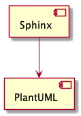

1. 環境構築¶
1.1. Sphinx環境の構築¶
Python 3のインストール
Python公式サイトよりインストーラにてインストール
Python 2のSphinxは更新が止まっているので、Python 3を使用する
Windowsは64-bit版
Sphinxのインストール
> pip install sphinx Pillow
Read the Docsテーマのインストール
> pip install sphinx-rtd-theme
GNU Makeのインストール（Windows）
Make for Windowsからインストールする
無くてもよいが、
makeで出力できたほうが良い
TeX Liveのインストール
TeX Liveからインストールする
PDF出力する際に必要
サイズが大きく、インストールに時間がかかる
1.1.1. 日本語拡張の設定¶
通常の設定では段落中で改行すると、改行部分にスペースが入る。日本語ドキュメントではこの動作は好ましくないため、Sphinx-Users.jpで公開されている日本語拡張を入れる。
https://sphinx-users.jp/reverse-dict/html/japanese.htmlを参考にファイルをダウンロードして、conf.pyを設定する。
1.1.2. PlantUML¶

図 1.1 PlantUML¶
テキストベースでUMLベースを描けるようになる。軽快に使えてなかなか楽しい。図を残す目的としては良いと思う。ただ、図を使って考えるのには向いてないので、あくまでドキュメントとして残す用途。
javaをインストールする
PlantUMLはJavaアプリ
AdoptOpenJDKのOpenJ9版を使用
Graphvisをインストールする
Windowsはインストーラーだが、MacではHomebrewなどを経由する
PlauntUMLをダウンロードして適当に配置
~/.local/bin/pluntuml.jar
sphinxcontrib-plantumlをインストールする
> pip install sphinxcontrib-plantuml
1.1.2.1. 参考¶
PlantUML:https://plantuml.com/
Graphviz:https://www.graphviz.org/
sphinxcontrib-plantuml:https://pypi.org/project/sphinxcontrib-plantuml/
1.2. エディタ環境¶
項目 |
内容 |
補足 |
|---|---|---|
エディタ |
Visual Studio Code |
|
フォント |
Ricty Diminished |
|
ターミナル（Windows） |
Git Bash |
WindowsではGitに付属するGit Bashを使用する |
拡張機能 |
|
Table FormatterはreSTに対応しているが、個人的にはあまり使用しない |
1.2.1. Visual Studio CodeのPython環境について¶
ワークスペースの設定（.vscode/settings.json）を以下のようにすることで、任意のバージョンのPythonを使用することができる。SphinxではPython 3を使用したいため、Pyhton 2と併用の環境で設定する。
{
"python.pythonPath": "C:\\Users\\kkAyataka\\AppData\\Local\\Programs\\Python\\Python37\\python.exe",
"terminal.integrated.env.windows": {
"PATH": "C:\\Users\\kkAyataka\\AppData\\Local\\Programs\\Python\\Python37;C:\\Users\\kkAyataka\\AppData\\Local\\Programs\\Python\\Python37\\Scripts;${env:PATH}"
}
}
Pythonのパスを指定することで、任意のバージョンのPythonを使用することができる。また、統合ターミナルの環境変数を設定することで、ターミナルで使用するPython環境もそろえることができる。
1.3. その他¶
reSTファイルの行末はlf固定にする
CRLFだと構文チェックでエラーになる
EditorConfigと.gitattributesに設定する
rsSTファイルのインデント
3スペースか2スペースの問題...
3と2の併用が必要で、頭が3、そのあとが2ということも多く、reSTを記述する環境や文章の性質によって、有効な設定が異なる
現状はちょっとあきらめてる
ディレクティブが3だと書きやすいが...
箇条書きは2スペースのほうがインデントの変更がしやすい
git subtreeによる構成は使用しないGitHub Pagesを前提にした場合、
git subtreeを利用して出力フォルダとgh-pagesブランチを紐づける方法があるが、この方法については採用しない公開用ファイルが
masterブランチに見えるためで、GitHub上での検索が汚れるため
1.4. 参考リンク¶
Python:https://www.python.org/
Read the Docsテーマ:https://github.com/rtfd/sphinx_rtd_theme
Make for Windows:http://gnuwin32.sourceforge.net/packages/make.htm
TeX Live:https://www.tug.org/texlive/
Sphinx-Users.jp:https://sphinx-users.jp/index.html